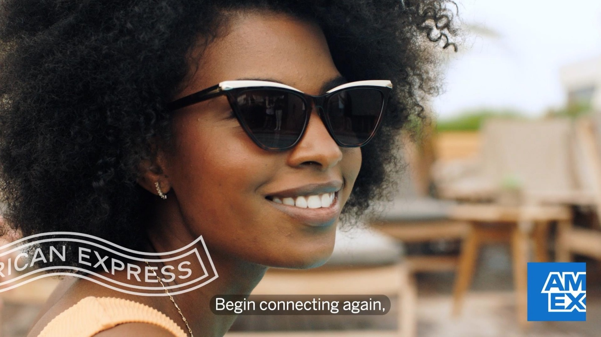
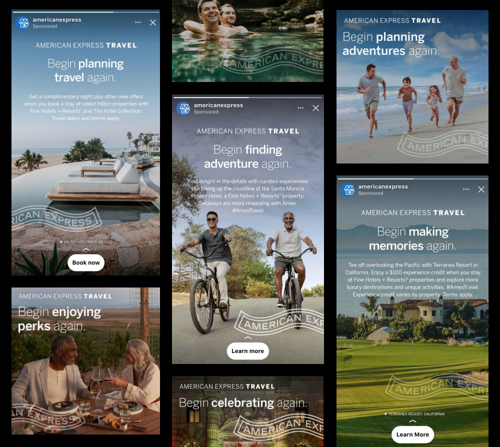
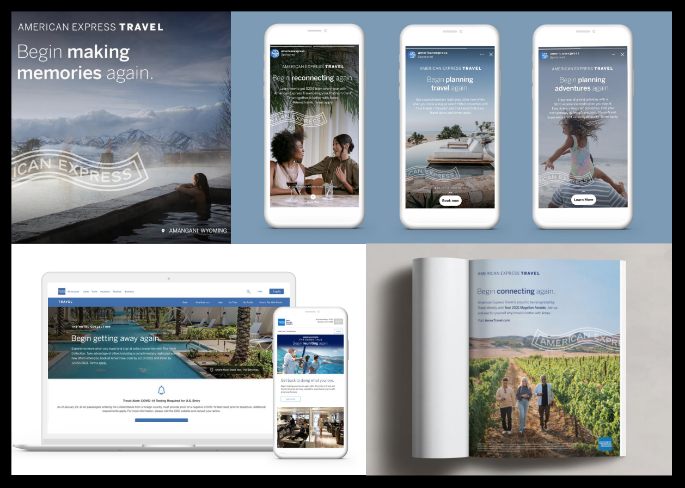
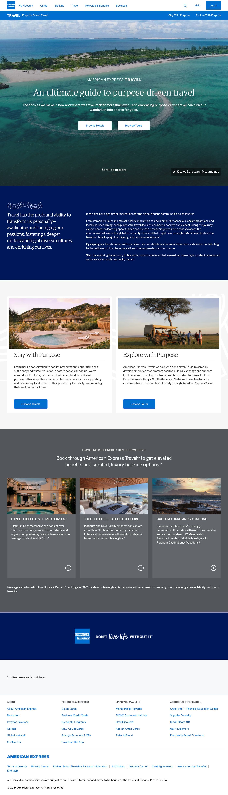
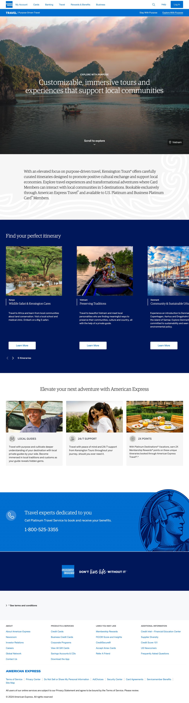
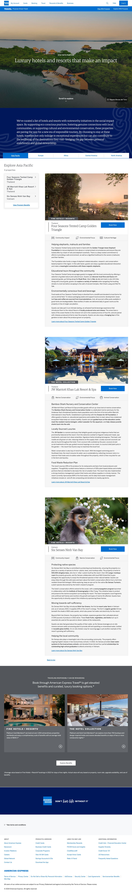

With travel restrictions lifted following the pandemic, American Express Travel wanted a campaign that would speak to the moment and help it tactfully lead the way in the return to travel.
Through focus groups and consumer research, we settled on the campaign platform, Begin Again, which empowered safe, meaningful travel for those who were ready to travel, and gave inspiration to those who were not quite ready yet.
Using a customizable fill-in-the-blank device, we allowed Amex card members to project their own memories into a rotating selection of actions they were encouraged to begin again, from planning and booking trips to adventuring and making memories.
Begin Again was brought to life through B2B and B2C collateral including social, print, and video. The optimistic tone set a new direction for the brand and continues to inform its consumer-facing messaging to this day.
The campaign helped American Express Travel outperform its competitors in spend recovery as well as its own 2019 booking levels in 2021-2022.





